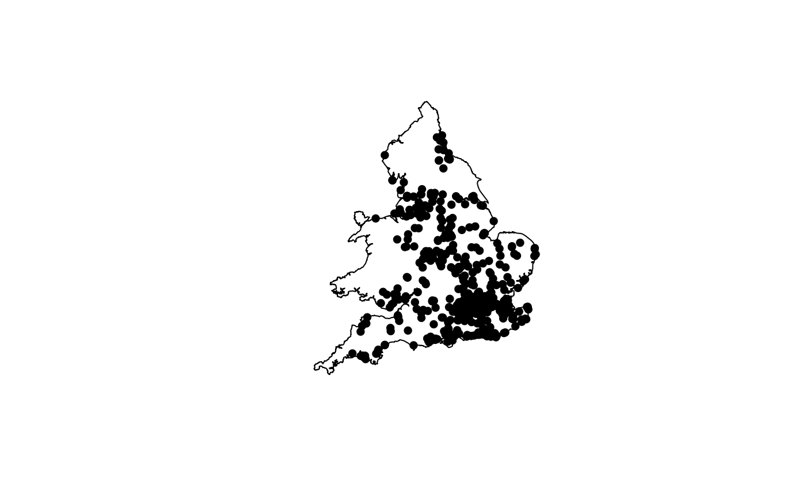

EWHP.RdA house price data set for England and Wales from 2001 with 9 hedonic (explanatory) variables.
data(EWHP)A data frame with 519 observations on the following 12 variables.
a numeric vector, X coordinate
a numeric vector, Y coordinate
a numeric vector, the purchase price of the property
a numeric vector, 1 if the property was built during the world war, 0 otherwise
a numeric vector, 1 if the property was built after the world war, 0 otherwise
a numeric vector, 1 if the property was built between 1960 and 1969, 0 otherwise
a numeric vector, 1 if the property was built between 1970 and 1979, 0 otherwise
a numeric vector, 1 if the property was built between 1980 and 1989, 0 otherwise
a numeric vector, 1 if the property is detached (i.e. it is a stand-alone house), 0 otherwise
a numeric vector, 1 if the property is semi detached, 0 otherwise
a numeric vector, if the property is a flat (or 'apartment' in the USA), 0 otherwise
a numeric vector, floor area of the property in square metres
Fotheringham, A.S., Brunsdon, C., and Charlton, M.E. (2002), Geographically Weighted Regression: The Analysis of Spatially Varying Relationships, Chichester: Wiley.
###
data(EWHP)
head(ewhp)
#> Easting Northing PurPrice BldIntWr BldPostW Bld60s Bld70s Bld80s TypDetch
#> 1 599500 142200 65000 0 0 0 0 1 0
#> 2 575400 167200 45000 0 0 0 0 0 0
#> 3 530300 177300 50000 1 0 0 0 0 0
#> 4 524100 170300 105000 0 0 0 0 0 0
#> 5 426900 514600 175000 0 0 0 0 1 1
#> 6 508000 190400 250000 0 1 0 0 0 1
#> TypSemiD TypFlat FlrArea
#> 1 1 0 78.94786
#> 2 0 1 94.36591
#> 3 0 0 41.33153
#> 4 0 0 92.87983
#> 5 0 0 200.52756
#> 6 0 0 148.60773
houses.spdf <- SpatialPointsDataFrame(ewhp[, 1:2], ewhp)
####Get the border of England and Wales
data(EWOutline)
plot(ewoutline)
plot(houses.spdf, add = TRUE, pch = 16)
